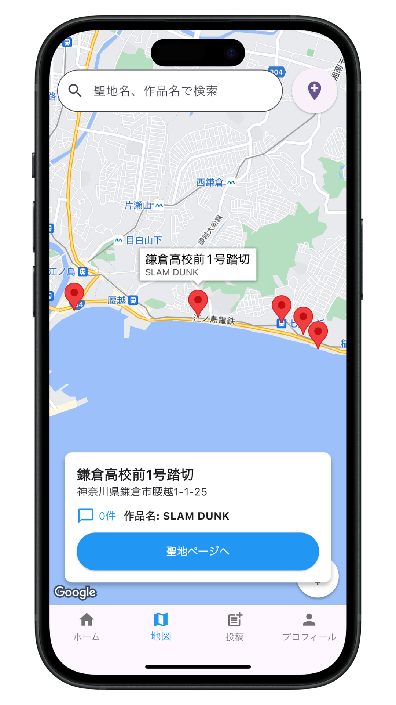
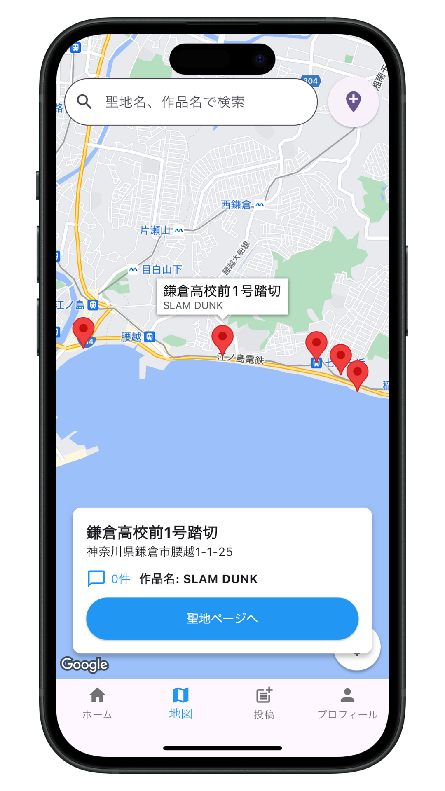

Seichiアプリ開発ストーリー
アニメ聖地マップ「Seichi」は、アニメファンの聖地巡礼をより便利に、より楽しくするために開発されました。開発者自身がアニメの聖地巡礼が好きで、「もっと簡単に聖地を探せるアプリがあればいいのに」という思いから始まりました。
聖地巡礼をする際、「どこに行けばいいのか分からない」「どの作品のどのシーンの場所なのか忘れてしまう」といった悩みを解決するため、地図上で簡単に聖地を探せる機能を実装。さらに、訪れた場所の思い出を残せるレビュー機能や、次に行きたい場所を管理できるブックマーク機能も追加しました。
また、アプリを継続的に使っていただくためのモチベーションとして、ポイントシステムを導入。ログインボーナスやレビュー投稿でポイントが貯まり、将来的には特典と交換できる仕組みを計画しています。
Seichiは今後も機能を拡充し、より多くのアニメ作品の聖地情報を追加していく予定です。アニメファンの皆さんの聖地巡礼をサポートし、素晴らしい体験を提供できるよう努めてまいります。